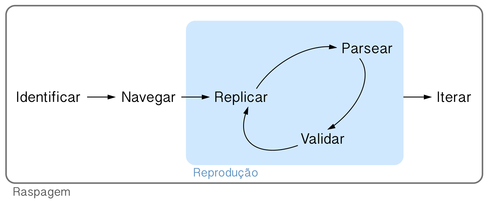

6.3 O Fluxo do Web Scraping
Autor: Caio
Dificuldade média
program
Web scraping (ou raspagem web) não é nada mais que o ato de coletar dados da internet. Hoje em dia é muito comum termos acesso rápido e fácil a qualquer conjunto de informações pela web, mas raramente esses dados estão estruturados e em uma forma de fácil obtenção pelo usuário.
Isso faz com que precisemos aprender a coletar esses dados por conta própria. Neste post vou descrever o fluxo do web scraping, um passo a passo para explicar aos iniciantes como funciona a criação de um raspador.
6.3.1 O fluxo
Caso você já tenha visto o fluxo da ciência de dados descrito por Hadley Wickham, o fluxo do web scraping vai ser bastante simples de entender. Todos os itens a seguir vão se basear neste diagrama:

Cada verbo indica um fase do processo de raspar dados da internet. A caixa azulada no meio do diagrama denominada reprodução indica um procedimento iterativo que devemos repetir até que a coleta funcione, mas, de resto, o fluxo é um processo linear.
Nas próximas seções, vamos explorar um exemplo bem simples para entender como esses passos se dariam no mundo real: extrair os títulos de artigos da Wikipédia.
6.3.1.1 Identificar
O primeiro passo do fluxo se chama identificar porque nele identificamos a informação que vamos coletar. Aqui precisamos entender bem qual é a estrutura das páginas que queremos raspar e traçar um plano para extrair tudo que precisamos.
No nosso exemplo, precisaríamos entrar em algumas páginas da Wikipédia para entender se os títulos se comportam da mesma forma em todas. Como a Wikipédia é um site organizado, todos os títulos são criados da mesma forma em absolutamente todos os artigos.
6.3.1.3 Replicar
Se tivéssemos que fazer várias requests HTTP para chegar até a informação que queremos, seria aqui em que tentaríamos replicar essas chamadas. Neste passo é importante compreender absolutamente tudo que a página está fazendo para trazer o conteúdo até você, então é necessário analisar o seu networking a fim de entender tais requests e seus respectivos queries.
No nosso caso, basta fazer uma chamada GET para obter a página do artigo desejado. Também se faz necessário salvar a página localmente para que possamos dar continuidade ao fluxo.
url <- "https://en.wikipedia.org/wiki/R_(programming_language)"
httr::GET(url, httr::write_disk("~/Desktop/wiki.html"))6.3.1.4 Parsear
O anglicismo parsear vem do verbo to parse, que quer dizer algo como analisar ou estudar, mas que, no contexto do web scraping, significa extrair os dados desejados de um arquivo HTML.
Aqui vamos usar a informação obtida no passo 2 para retirar do arquivo que
chamei de wiki.html o título do artigo.
"~/Desktop/wiki.html" %>%
xml2::read_html() %>%
rvest::html_node(xpath = "//*[@id='firstHeading']") %>%
rvest::html_text()
#> [1] "R (programming language)"6.3.1.5 Validar
Se tivermos feito tudo certo até agora, validar os resultados será uma tarefa simples. Precisamos apenas reproduzir o procedimento descrito até agora para algumas outras páginas de modo verificar se estamos de fato extraindo corretamente tudo o que queremos.
Caso encontremos algo de errado precisamos voltar ao passo 3, tentar replicar corretamente o comportamento do site e parsear os dados certos nas páginas.
6.3.1.6 Iterar
O último passo consiste em colocar o nosso scraper em produção. Aqui, ele já deve estar funcionando corretamente para todos os casos desejados e estar pronto para raspar todos os dados dos quais precisamos.
Na maior parte dos casos isso consiste em encapsular o scraper em uma função que recebe uma série de links e aplica o mesmo procedimento em cada um. Se quisermos aumentar a eficiência desse processo, podemos paralelizar ou distribuir o nosso raspador.
scraper <- function(url, path) {
httr::GET(url, httr::write_disk(path))
path %>%
xml2::read_html() %>%
rvest::html_node(xpath = "//*[@id='firstHeading']") %>%
rvest::html_text()
}
purrr::map2_chr(links, paths, scraper)6.3.2 Conclusão
Fazer um scraper não é uma tarefa fácil, mas, se toda vez seguirmos um método consistente e robusto, podemos melhorar um pouco o nosso trabalho. O fluxo do web scraping tenta ser este método, englobando em passos simples e razoavelmente bem definidos essa arte que é fazer raspadores web.